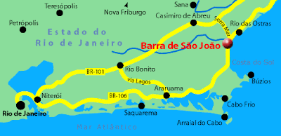

Barra de São João
Barra de São João é um charmoso distrito com ares interioranos e simplicidade acolhedora, situado no município de Casimiro de Abreu, no norte do estado do Rio de Janeiro. Conhecida por seu clima tranquilo, é o destino ideal para quem busca descanso e deseja mergulhar em sua rica história. Com um ambiente sereno e uma cultura local vibrante, Barra de São João oferece uma experiência autêntica para os visitantes.
Breve história
Barra de São João tem suas raízes históricas profundamente conectadas com o desenvolvimento do Brasil colonial. Fundada no início do século XVII, a localidade começou como um ponto estratégico para o comércio e navegação, aproveitando sua posição privilegiada na foz do rio São João. No século XIX, quando o Brasil ainda era um império, a cidade floresceu como Freguesia de São João Batista, com uma economia voltada principalmente para a agricultura e o comércio fluvial.
A conexão com o poeta Casimiro de Abreu é um dos pontos mais notáveis da história da cidade. Ele viveu parte de sua infância no distrito e seu amor pela natureza e simplicidade da vida interiorana transparece em seus poemas. A casa onde ele passou boa parte de sua vida ainda está preservada, atraindo visitantes interessados em conhecer mais sobre sua obra e sua relação com a região.
lém disso, Barra de São João foi palco de lutas e transformações durante o período de colonização e na formação do território do Rio de Janeiro, preservando em suas construções e tradições traços desse passado. A tranquilidade que a cidade oferece hoje, combinada com sua história rica, a transforma em um lugar especial para quem aprecia cultura, história e paisagens bucólicas
Localização geográfica
Distância até a capital do estado.
O que fazer na terra do poeta?
- Praia da Igrejinha: Ideal para famílias, com águas calmas e tranquilas.
- Praião: Perfeito para surfistas e amantes de esportes aquáticos, com ondas fortes e um ambiente mais agitado.
- Museu Casa Casimiro de Abreu: Conheça a casa onde viveu o poeta romântico brasileiro.
- Centro Histórico: Explore as ruas charmosas e a arquitetura colonial da cidade.
- Passeios de barco: Navegue pelo Rio São João e admire a beleza da natureza local.
- Trilhas ecológicas: Conecte-se com a natureza em meio à mata atlântica
Gastronomia da cidade
Peixes e frutos do mar frescos: A proximidade do mar garante ingredientes frescos e saborosos para preparar pratos como moqueca, bobó de camarão e peixe assado na brasa.
Comidas típicas: Não deixe de experimentar pratos como a caldeirada, o pirão de peixe e a farofa de banana.
Doces regionais: As cocada, o doce de leite e o quindim são algumas das delícias que você pode encontrar na região.
Eventos Gastronomicos
Circuito Gastronômico e Cultural da Beira-Rio: Evento que reúne os melhores restaurantes da região, oferecendo um menu especial com pratos típicos e contemporâneos.
Festival de Crustáceos: Uma celebração dos sabores da região, com diversos pratos à base de crustáceos, preparados de forma especial para valorizar a gastronomia local.
Arraiá Gastronômico: Uma festa junina com comidas típicas, quadrilha e muita música.